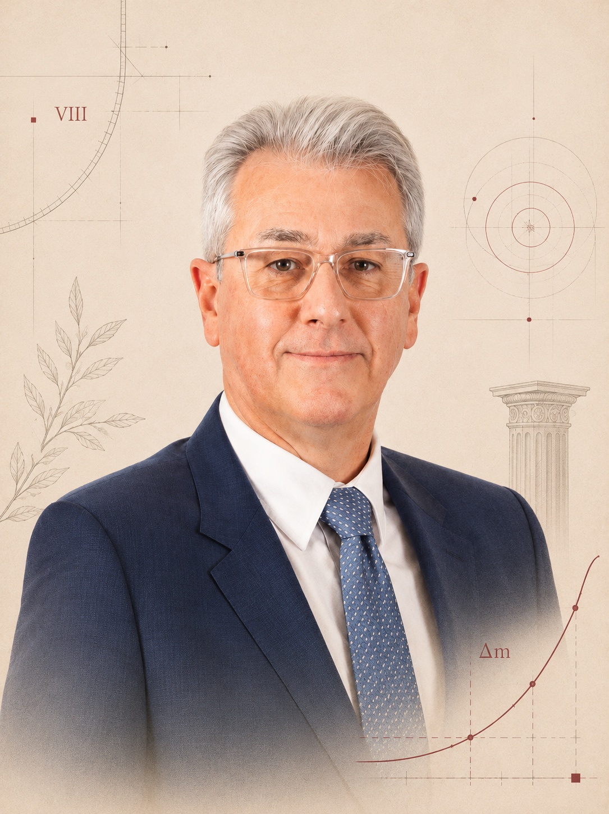
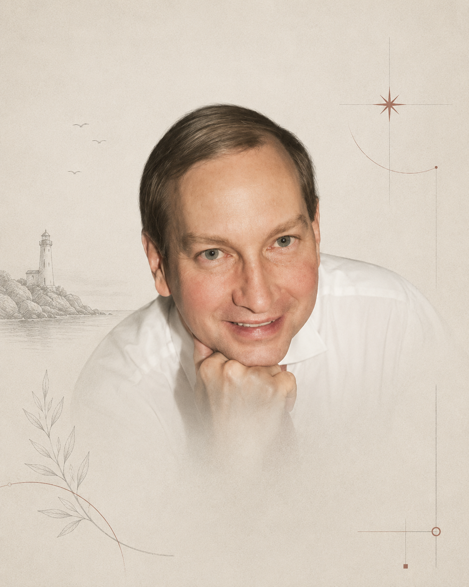
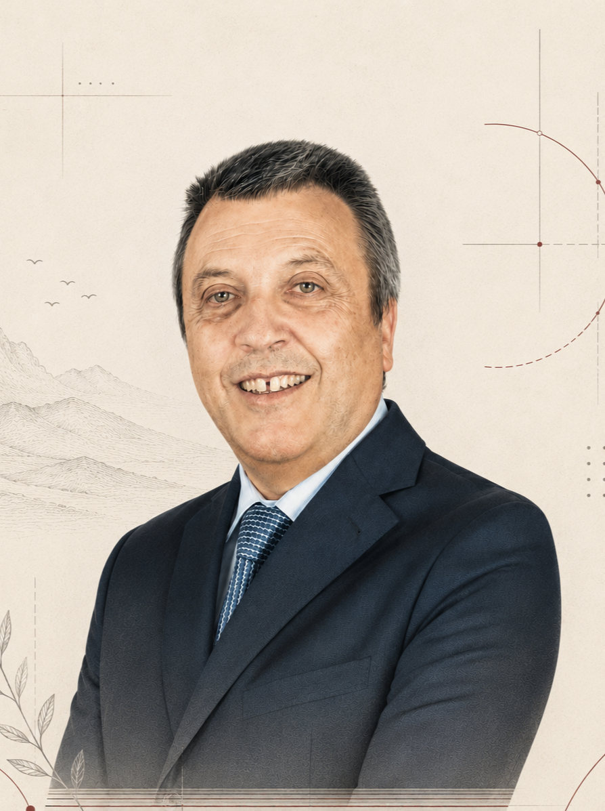
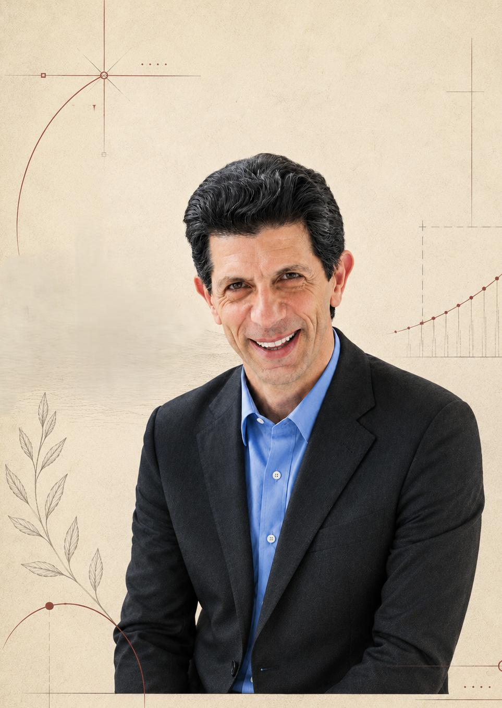
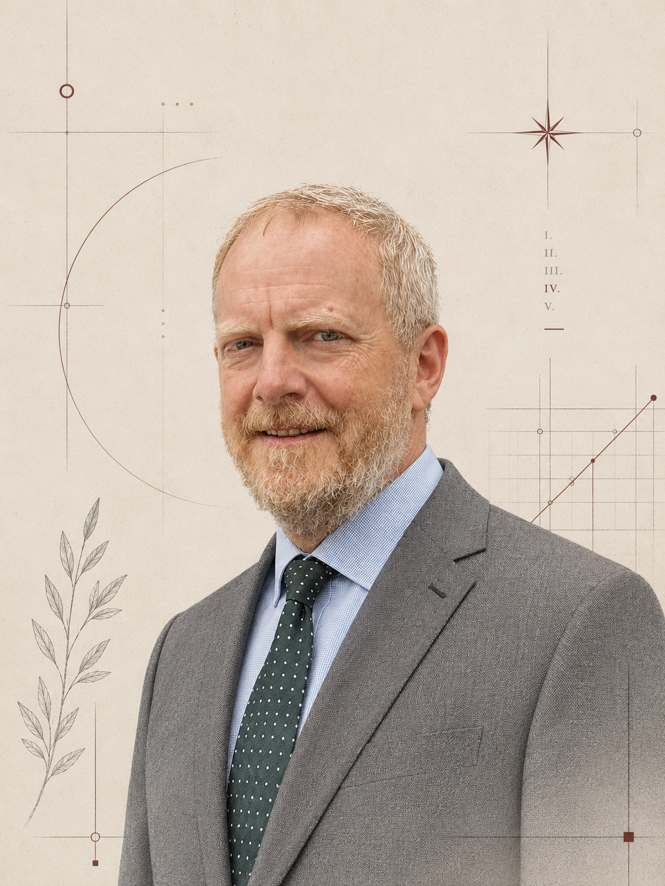

Le statu quo a un prix. Nous vous aidons à cesser de le payer.
Qualamantis est une équipe mondiale de praticiens seniors, forts de plus de 30 ans à la tête de cette transformation dans les industries les plus exigeantes au monde. Nous diagnostiquons où la valeur fuit de votre entreprise, construisons ce qui l'arrête, et restons à vos côtés jusqu'à ce que le résultat soit ancré — pas jusqu'à la remise de la présentation.
Les coûts cachés apparaissent rarement sur une seule ligne du compte de résultat
Défauts récurrents, lancements lents et urgences permanentes se traduisent par des marges érodées, des délais manqués et des clients perdus : une taxe que beaucoup d'entreprises paient sans jamais la mesurer.
La vraie question n'est pas de savoir si vous pouvez vous permettre de vous transformer, mais combien le statu quo vous coûte chaque année.
Transformation d'entreprise dans quatre domaines
Une offre stratégique unique, quatre domaines interconnectés — parce que qualité, ingénierie, production et coûts sont rarement des problèmes séparés. Nous diagnostiquons, concevons et implémentons sur les quatre, ou nous concentrons là où le levier est le plus fort.
Qualité & EHS
De la stratégie à l'atelier — systèmes de management, certification ISO/IATF, audits, reporting ESG, digitalisation.
02Conception & Ingénierie
Design for Six Sigma, analyse des garanties, événements d'innovation, stratégie de propriété intellectuelle — qualité et performance intégrées avant le début de la production.
03Production & Opérations
Lean, Zéro Défaut et achats avancés ? des opérations et chaînes d'approvisionnement résilientes et efficientes en coûts.
04Amélioration des coûts
Un programme transversal pour concevoir la baisse du coût produit — sur tous les processus, avec ou sans problème de qualité.
À l'aise dans des secteurs réglementés et à forts enjeux
Nous travaillons principalement avec des entreprises industrielles où qualité, fiabilité et complexité produit sont des priorités stratégiques — où le coût de l'échec, en garantie, en sécurité, en réputation, est significatif.
Focus secteur — Roulements
Pas une niche dans laquelle nous sommes entrés par hasard. Des années d'engagement senior auprès des grands fabricants de roulements et de leurs chaînes d'approvisionnement, du traitement thermique et de la rectification à l'analyse des garanties et à la revue de conception.
Un programme, trois leviers qui se renforcent
Diagnostiquer → construire → capter la valeur. Pas un rapport à classer, mais une transformation avec des responsables clairs, des KPI et vos propres équipes formées pour la poursuivre.
Évaluation des écarts
Une analyse des écarts et SWOT au niveau de l'entreprise — une image honnête avant d'investir un euro dans le changement.
02Plan d'action
Le diagnostic transformé en processus et en personnes qui tiennent dans la durée — sept chantiers, responsables clairs, KPI mesurables.
03Programme d'amélioration des coûts
Un moteur autonome pour concevoir la baisse du coût produit — avec ou sans problème de performance.
En parallèle — une fois le plan établi, digitalisation et réduction des coûts avancent ensemble, et chaque cycle relève le niveau de référence.
Des économies réelles, mesurées en euros
Conduit comme un programme structuré d'amélioration des coûts, voici le potentiel type : identifié en détail et mené jusqu'à la mise en œuvre.
Nous concevons le changement —
et restons pour le rendre réel
- Des praticiens seniors ayant mené des transformations dans l'industrie mondiale
- Un focus sur les économies qui atteignent le compte de résultat, pas seulement le rapport
- Qualité, EHS, ingénierie et coûts pilotés comme un seul agenda





Commencez par un diagnostic court de performance d'entreprise
2–3 semaines. Une vue quantifiée de vos pertes et opportunités de coût produit, toutes deux exprimées en euros, avec une recommandation prête pour la direction. Faible engagement, forte clarté.